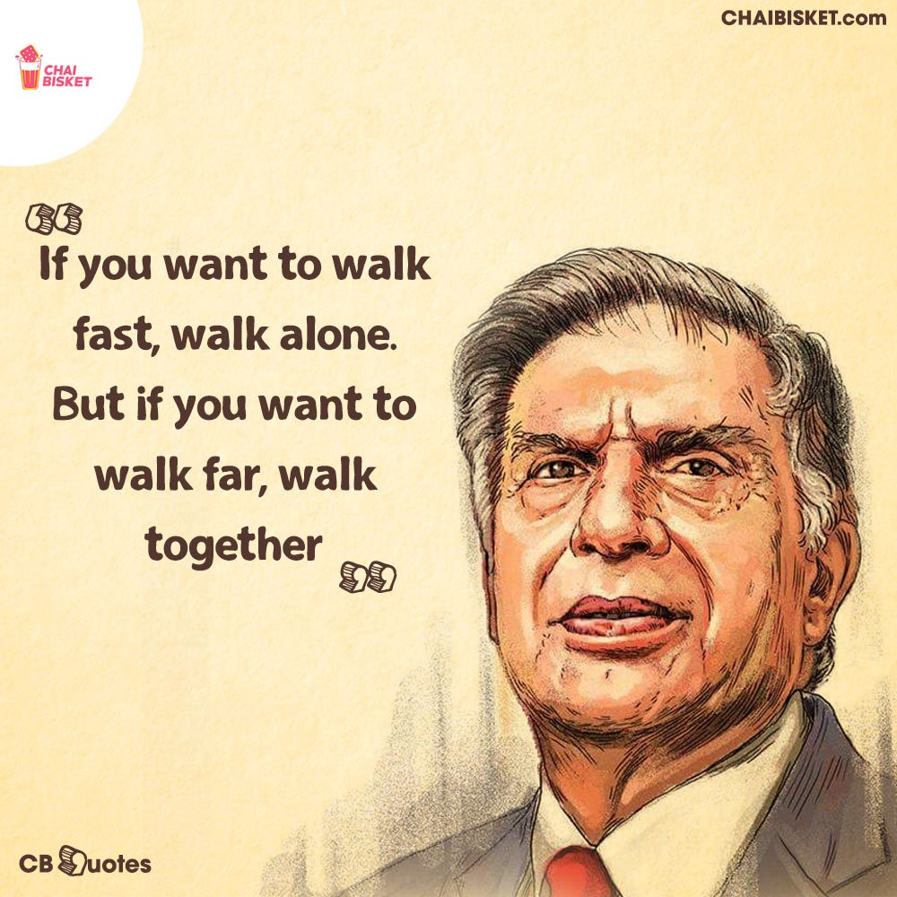

Ratan Tata
Man with a golden heart

The Man.The Legend.The Life.
Birth
Ratan Tata was born in Bombay, now Mumbai, during the British Raj, on 28 December 1937.
He is the son
of Naval Tata, who was born in Surat and later adopted into the Tata family, and Sooni Tata, the niece
of Tata group founder Jamsetji Tata.His first language is Gujarati.
Career
In the 1970s, Tata was given a managerial position in the Tata group.In 1991, J. R. D. Tata stepped down as chairman of Tata Sons, naming him his successor. During the 21 years Tata led the Tata Group, revenues grew over 40 times, and profit over 50 times.He also conceptualised and spearheaded the development of the Tata Nano car, which helped put cars at a price-point within reach of the average Indian consumer.
Honors
Ratan Tata received the Padma Bhushan in 2000 and Padma Vibhushan in 2008, the third and second highest civilian honours awarded by the Government of India. Along with national civilian honours, Tata has also received various state civilian honours like 'Maharashtra Bhushan' in 2006 for his huge work in the public administration in Maharashtra and 'Assam Baibhav' in 2021 for his exceptional contribution towards furthering cancer care in Assam.
True Gem
Apart from possessing remarkable business foresight, he is also known for his utmost simplicity and humanity. Moreover, his qualities like kindness and empathy make Ratan Tata a true gentleman.
Golden Words by Ratan Tata Sir.